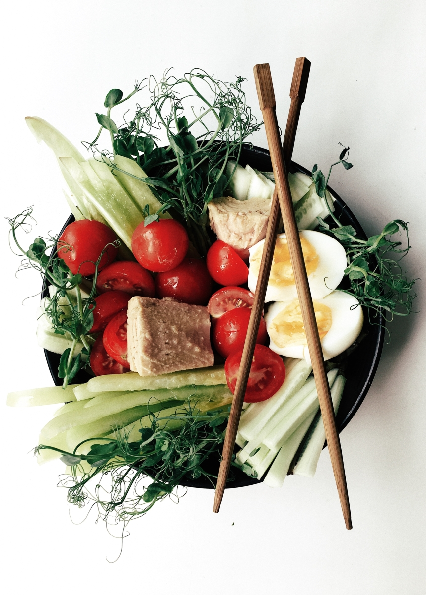
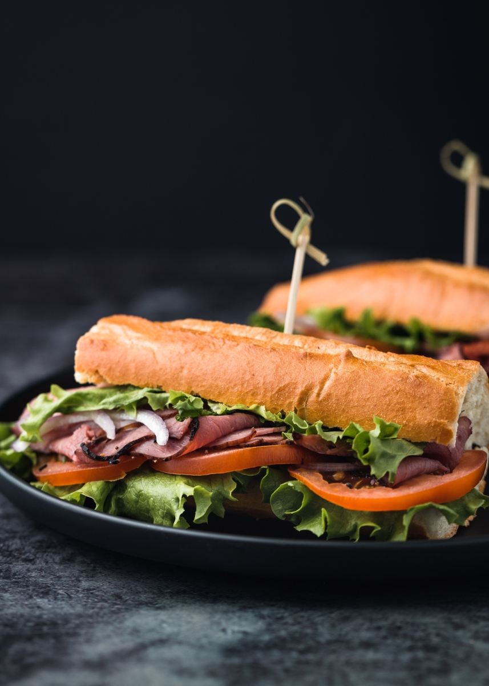

Salads


Sandwiches




Beverages


Desserts


About Me, The Foodie
I have loved taking pictures ever since I was a little girl. I used to take pictures of my dollie and her friends at her tea parties. Now that I'm a big girl, I like taking pictures of the meals that my parents prepare and serve at home and at our family restaurant.
Daddy said that my pictures were very nice, and that he would like to show them to the world on the World Wide Web thingie. I just like taking them, and I have a lot saved on my computer. He also has some of them displayed on the walls of the restaurant.
People are surprised when he tells them that I took them. They just laugh and smile. I don't think they believe him.